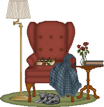
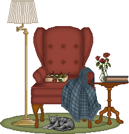

Get Yourself a Library Card!
I'm very, very enthusiastic about libraries and library services. I have four library cards, and the only reason I don't have more is because I haven't gotten around to figuring out which other cards I qualify for. If you don't already have one or don't know how to go about looking into getting one, this page is for you!
(This page is written with United States library servies in mind, though I'd hope the process and services aren't too different elsewhere!)
Why Bother?
Outside of my obnoxious love of public spaces where you're allowed to exist without being required to spend money as well as the fact that you're already paying for them if you pay taxes, libraries provide a whole host of servies in addition to loaning out media. Below are some of the servies I have or am able to take advantage of using my own cards:
|
|
Let's Get a Card!
1. Figure out what you qualify for
What you qualify and how varies a little bit from state to state, but for the most part, it'll either be based at the city, county, or state level. You can honestly just search "[your city/county/state] library" to do a little investigating.
Where I live currently, it's primarily set up at the county level. Back where I was in Arizona, it was based primarily at the city level. The good news is that most library systems in the same state have reciprocal borrowing agreements so that you can qualify for multiple cards (like I did!). I typically recommend starting with the branch most accessible to you physically (if you want to go browse) or the one that'll have the larger catalog (especially for digital borrowing or interest in niche topics).
2. Figure out how to apply
Some library websites are easier to navigate than others, but you're probably looking for something that says "Get a Card" or just "Library Cards". If you can't find it, you can always email or call the library!
3. Apply!
Pretty straight forward! Usually they'll need your address. When I applied online, they sent me a follow up message asking for a picture of my photo ID and proof of residence, which they typically ask for when you apply in person also.
There Are Also Some Great Digital Libraries
If you're looking for online resources or just prefer digital formats, here're some options for you:
- Open Library: Managed by The Internet Archive, Open Library allows anyone across the globe to access their services. An account required for all loans/media, however borrowers with an account can check out up to 10 books at a time as well as create reading lists/logs. I also really enjoy browsing their virtual library explorer which is set up like a digital library shelf that you can look though just like at the library.
- Project Gutenberg: A digital library with a focus on older books where U.S. copyright has expired (or in a few generous cases, the copyright holder has provided permission for non-commercial use). I've known they existed for a while, but didn't start using them until someone linked me to their treasure trove of cooking literature.
- MetPublications: An online portal to The Met's art publishing program. While there is a larger database, this link should take you specifically to the titles that are readable online or downloadable as a PDF, no account necessary.
- Duke University Press: This link should take you to their collection of books that are either free or open access. If you want to narrow your search, you can narrow it down by suject. If you unselect the book option, it'll also show chapters from select other books that are free but I won't lie, it's a lot of table of contents.
 
